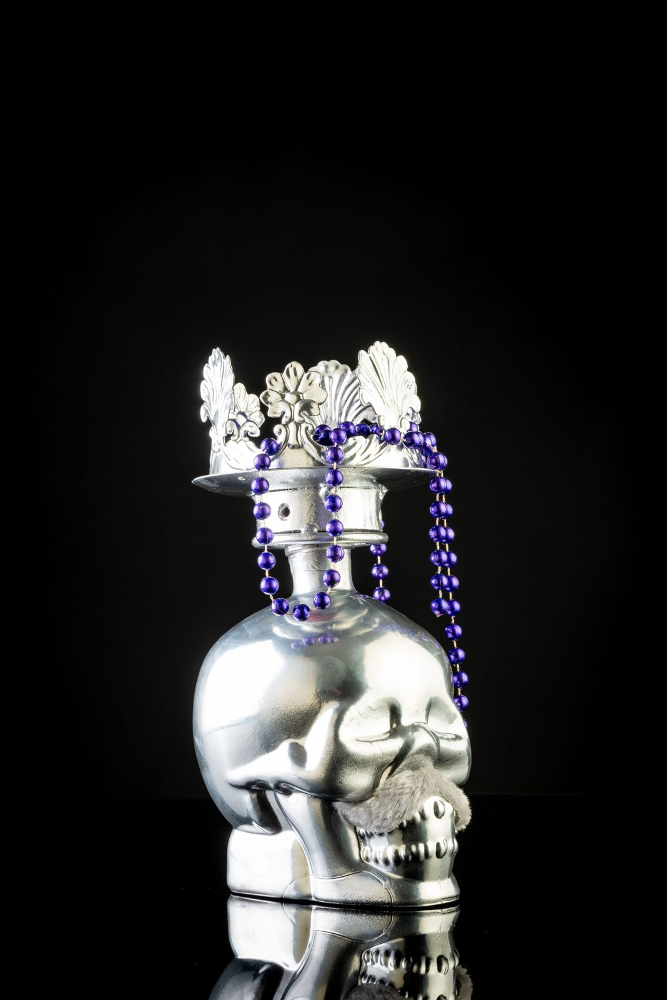
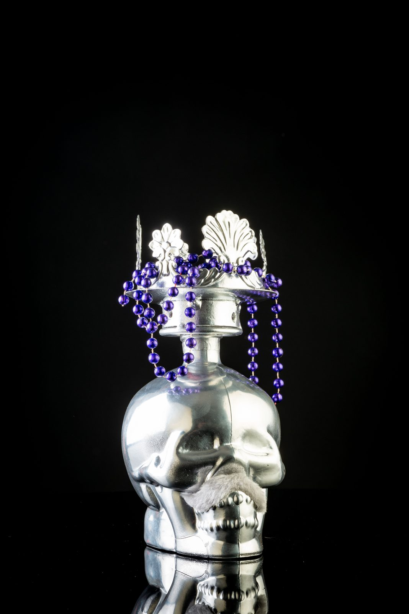
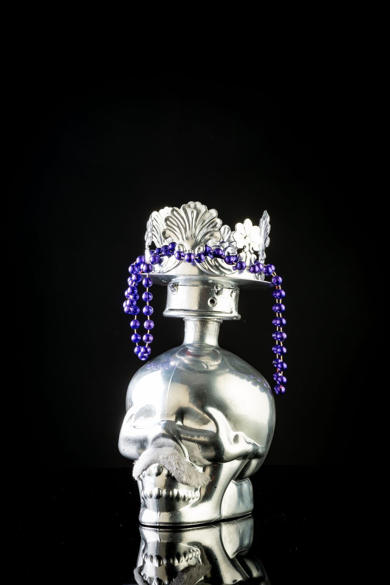
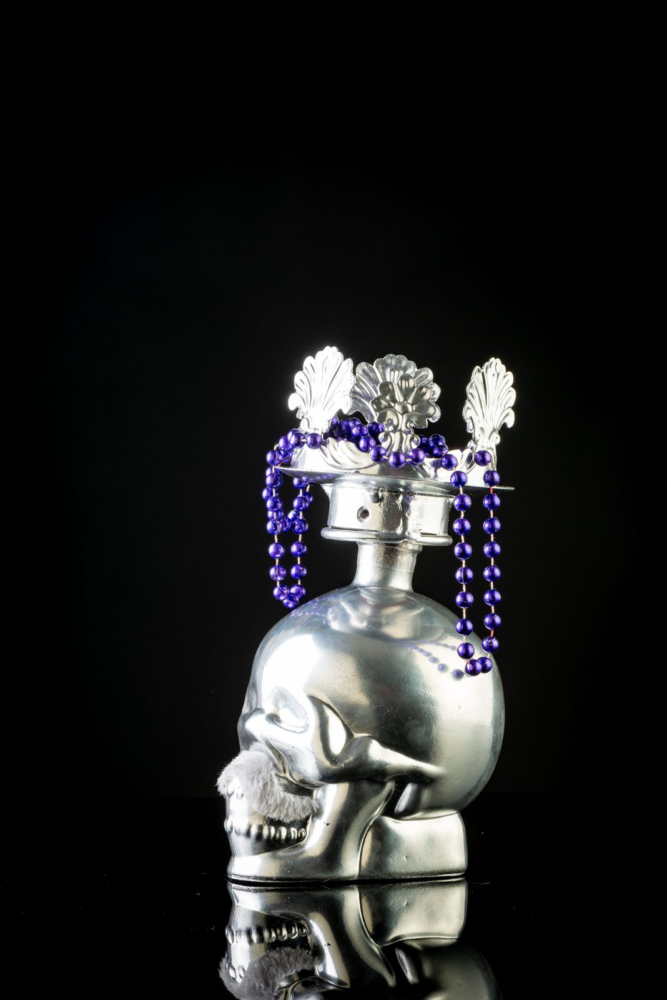

La Dama de Prata N.º 0001
Cada caveira é uma obra de arte. Cada garrafa, um brinde à vida. Absinto de edição limitada, assinado por Shazequin.
As fotografias correspondem à garrafa exata que irá receber.
A lenda desta caveira
Dizem que a Dama chegou ao altar da vida vestida de prata, com a coroa que os vivos lhe ofereceram — conchas do mar e contas roxas de quem já não teme o fim. É ela que abre o baile no Día de Los Muertos: quem a leva para casa, leva a festa consigo.
Esta garrafa não saiu de uma linha de produção — saiu das mãos de Shazequin.
Inspirada no Día de Los Muertos, a caveira Kultu não celebra a morte: celebra a memória, a alegria e a vida que continua. Cada peça é pintada individualmente à mão, com técnica mista — o que garante que a sua garrafa é, literalmente, a única no mundo com aquele rosto.
Numerada manualmente, esta é uma edição limitada e exclusiva. Não haverá reedição. Quando esta tiragem acabar, acaba mesmo — e a sua garrafa passa a ser, também ela, uma peça de coleção.
Autêntica e única. Como você.
| Tipo de bebida | Absinto |
| Volume | 70 cl |
| Grau alcoólico | 80% |
| Edição | Limitada — numerada à mão · N.º 0001 |
| Técnica da garrafa | Acrílico, esmalte, óleo, spray, silicone |
| Artista | Shazequin |
Confirmação de idade obrigatória antes da compra. Venda proibida a menores de 18 anos. Consuma com responsabilidade.